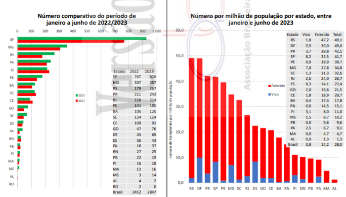
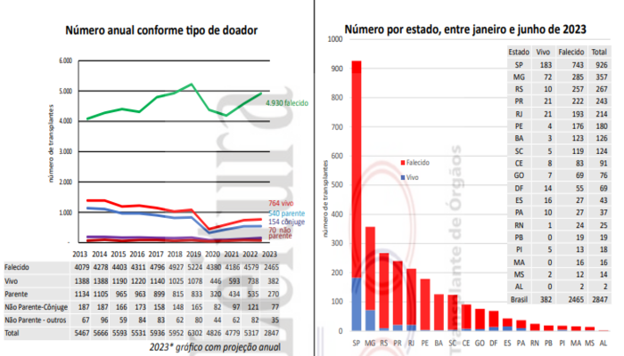

DRC NO BRASIL
O DRC no Brasil enfrenta desafios significativos, incluindo acesso limitado à saúde, prevenção inadequada, disponibilidade limitada de tratamento como diálise e transplante, falta de conscientização, custos financeiros, escassez de doadores de órgãos, falta de especialistas, desafios para a área infantil, comorbidades e diagnósticos tardios. Apesar dessas dificuldades, esforços estão sendo formados para melhorar o acesso aos cuidados do IRC e aumentar a conscientização sobre a prevenção e o tratamento no país.
Transplantes de Rim


Fonte:https://site.abto.org.br/wp-content/uploads/2023/09/RBT2023-2t-naoassociados.pdf
Pacientes pediátricos ativos em Lista de Espera - (Junho 2023)
| Estado | Pacientes |
|---|